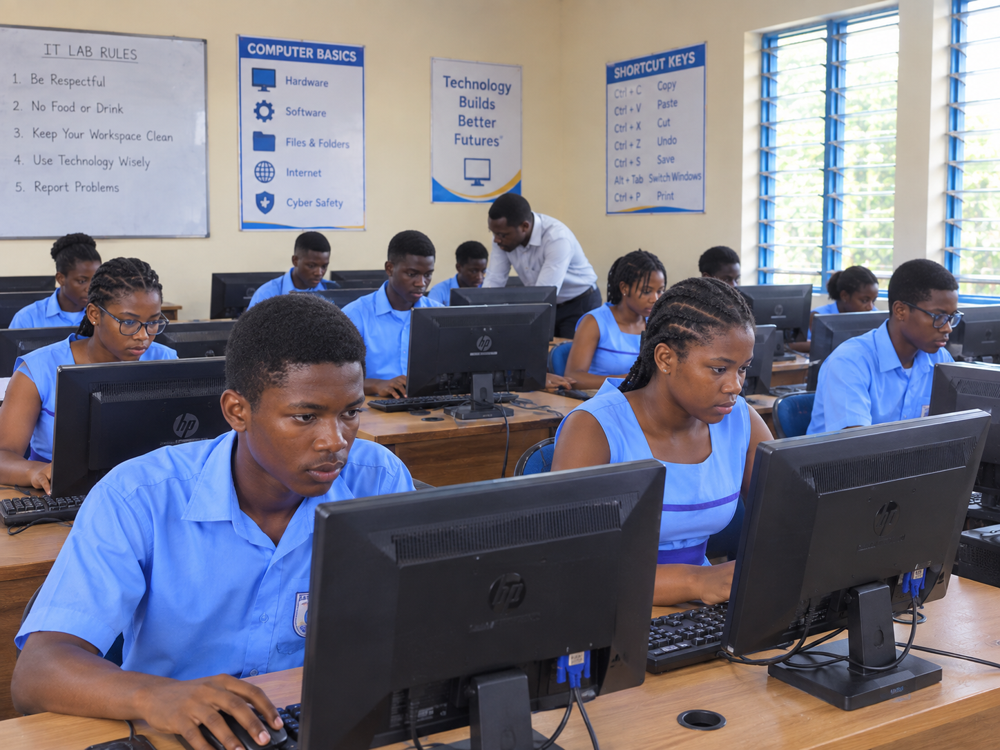
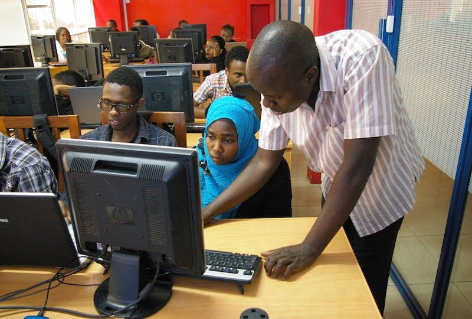

EDUCATION & TECHNOLOGY
Written by Gabriel
November 18, 2026
Technology is transforming education across Africa, creating new opportunities for students to learn, collaborate and prepare for the digital future.
The Role of Technology in Modern Education:
Empowering African Students for the Digital Future
Introduction
Education is an important tool for personal development and national growth. Over the years, technology has changed how students acquire knowledge and how teachers deliver lessons. Computers, smartphones, the internet and digital learning platforms have made education more accessible and interactive.
Across Africa, schools and educational institutions are increasingly embracing technology to improve teaching and learning. Students can now access educational materials, attend online classes and develop digital skills that prepare them for future opportunities.
1. The Importance of Technology in Education
Technology has made learning more flexible and convenient. Students can research different subjects, watch educational videos, read electronic books and communicate with teachers through digital platforms.
It also allows teachers to present information using projectors, computers and interactive learning tools, making difficult topics easier to understand.
2. Computer Education and Digital Skills
Computer education helps students develop essential skills such as typing, word processing, internet research, programming and data management. These skills are increasingly important in today's technology-driven world.

A modern computer laboratory provides students with opportunities to practise what they learn in the classroom. Practical computer training also helps students build confidence in using digital devices.
3. Online Learning and Digital Resources
Online learning has created opportunities for students to receive education beyond the traditional classroom. Through virtual classrooms and educational platforms, learners can access lessons, assignments and study materials from different locations.

Digital resources also encourage independent learning. Students can revisit recorded lessons, conduct research and study at their own pace.
4. Challenges Facing Technology in African Education
Despite its numerous advantages, the use of technology in African education still faces some challenges. These include poor internet connectivity, inadequate computer facilities, electricity interruptions and the high cost of digital devices.
Some schools also lack trained personnel to maintain computer systems and support digital learning. Addressing these challenges requires investment in infrastructure, training and educational technology.
5. The Future of Technology in Education
The future of education will increasingly depend on digital innovation. Artificial intelligence, virtual learning environments, cloud computing and other emerging technologies will continue to influence how students learn and how educational institutions operate.
African students who develop strong digital skills will be better positioned to participate in the global digital economy and contribute to technological development within their communities.
Conclusion
Technology has become an important part of modern education. It provides students with access to information, improves teaching methods and creates opportunities for developing essential digital skills.
Although challenges remain, investing in computer facilities, internet access and digital education will help strengthen the African educational system. Technology should therefore be embraced as an important tool for building a knowledgeable, skilled and digitally empowered generation.
Education is evolving, and technology is helping to shape its future.